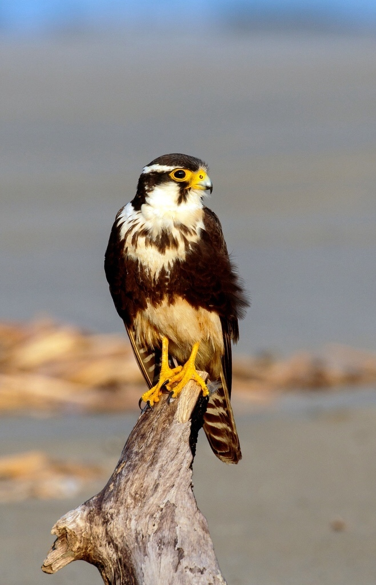

Cóndor Andino (Vultur gryphus)
Hábitat: Cordillera de los Andes, entre 3.000 y 5.000 m s.n.m.
Amenazas principales: Caza ilegal, envenenamiento, pérdida de hábitat.
Medidas de conservación: Protección en Apolobamba y Avaroa; educación ambiental.
Rol ecológico: Carroñero esencial que limpia el ecosistema.
Ejemplares estimados en Bolivia: Aproximadamente 350 individuos.

Guacamayo Azulamarillo (Ara ararauna)
Hábitat: Bosques tropicales amazónicos (Beni, Pando, Santa Cruz).
Amenazas principales: Tráfico ilegal y deforestación.
Medidas de conservación: Reforestación y control del comercio ilegal.
Rol ecológico: Dispersor de semillas del bosque.
Ejemplares estimados en Bolivia: Unos 1.000 ejemplares.

Pava Copanani (Penelope bridgesi)
Hábitat: Bosques húmedos del norte de Bolivia.
Amenazas principales: Caza excesiva y pérdida de cobertura vegetal.
Medidas de conservación: Monitoreo en parques nacionales.
Rol ecológico: Dispersora de semillas nativas.
Ejemplares estimados en Bolivia: Entre 800 y 1.200 individuos.

Pato Crestudo (Sarkidiornis melanotos)
Hábitat: Lagunas y humedales del oriente boliviano.
Amenazas principales: Caza deportiva y contaminación del agua.
Medidas de conservación: Protección de humedales.
Rol ecológico: Controla insectos acuáticos.
Ejemplares estimados en Bolivia: Alrededor de 600 individuos.

Halcón de Aplomado (Falco femoralis)
Hábitat: Llanuras y valles interandinos.
Amenazas principales: Pesticidas y pérdida de zonas de anidación.
Medidas de conservación: Protección de nidos.
Rol ecológico: Controla poblaciones de roedores.
Ejemplares estimados en Bolivia: Cerca de 900 individuos.

Tucán Toco (Ramphastos toco)
Hábitat: Selvas tropicales del oriente.
Amenazas principales: Caza y tráfico de aves.
Medidas de conservación: Programas de sensibilización.
Rol ecológico: Dispersor de semillas frutales.
Ejemplares estimados en Bolivia: Alrededor de 1.500 individuos.

Flamenco Andino (Phoenicoparrus andinus)
Hábitat: Lagunas altoandinas.
Amenazas principales: Minería y cambio climático.
Medidas de conservación: Protección de lagunas.
Rol ecológico: Indicador ambiental.
Ejemplares estimados en Bolivia: Entre 8.000 y 10.000 individuos.
Lechuzón de Campo (Asio flammeus)
Hábitat: Pastizales y zonas abiertas.
Amenazas principales: Expansión agrícola.
Medidas de conservación: Control del uso de agroquímicos.
Rol ecológico: Controlador de roedores.
Ejemplares estimados en Bolivia: Aproximadamente 1.200 individuos.

Loro Frente Azul (Amazona aestiva)
Hábitat: Bosques secos y sabanas.
Amenazas principales: Tráfico ilegal y tala.
Medidas de conservación: Reforestación y rescate de ejemplares.
Rol ecológico: Dispersor de semillas.
Ejemplares estimados en Bolivia: Entre 2.000 y 3.000 individuos.
Colibrí de Cochabamba (Oreotrochilus adela)
Hábitat: Zonas altoandinas floridas.
Amenazas principales: Deforestación y cambio climático.
Medidas de conservación: Reforestación con especies nativas.
Rol ecológico: Polinizador andino.
Ejemplares estimados en Bolivia: Menos de 700 individuos.